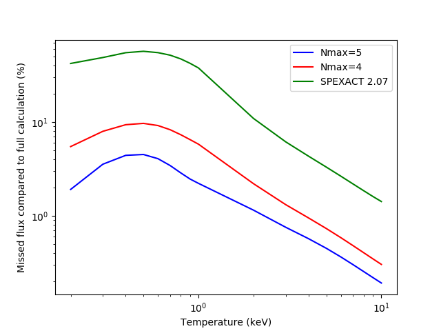

4.2. Optimizing model performance¶
Since the release of SPEX version 3, which contain major atomic data updates, the models that depend on this new atomic data run slower then before. Especially for cases which need a lot of model evaluations, this can be a nuisance.
In this section, we provide a number of suggestions that may help you speed the calculation up. Of course, speeding up the calculation usually means you also pay a (small) price in terms of accuracy. Therefore, we will also provide an estimate of the loss of accuracy where possible to help you to find the right balance between calculation speed and accuracy for your project.
4.2.1. Setting a maximum N¶
In many cases, the most important spectral lines are formed by transitions between the lower principle quantum numbers n. In the past couple of years, we added atomic levels with a higher n to improve the accuracy of the models. Although it takes more time for SPEX to calculate the spectrum including these higher levels, the line flux produced by these levels is rather small. Especially above temperatures of 2 keV.
To make the calculation faster, it is a good option to skip the calculation of the higher levels. In SPEX,
this can be done quite easily by setting nmax using the ions command (Ion: select ions for the plasma models):
SPEX> ions nmax all 5
The command above tells SPEX to only calculate levels for which n <= 5. Of course we miss out on some of the line flux by setting this parameter. We have run some tests what fraction of the flux in the 0.2-10 keV band we lose due to this setting with respect to a full model. The tests described below were done for a CIE model.

The figure above shows that the accuracy loss is highest for CIE models with temperatures below 2 keV. This is logical, because CIE models below 2 keV are dominated by line emission, rather than Brehmsstralung which dominates at higher temperatures. For Nmax <= 4 the missing flux is 10% of the total at maximum and for Nmax <= 5 it is 5% at maximum. For temperatures well above 1 keV, however, the error in the flux is less than 5%.
The corresponding time gain is significant, although not spectacular. On our test machine, a full CIE calculation took about 6 seconds, with Nmax = 5 it took about 4 seconds and with Nmax = 4 about 3 seconds were needed. The old Mekal calculation finishes in a fraction of a second, although at a much higher cost of accuracy.
In the Table below, we show an overview of the results. The maximum error is given as the fraction of the (line)flux that is missing in the model.
Setting |
CPU Time gain |
Max. Err (kT<2 keV) |
Max. Err (kT>2 keV) |
|---|---|---|---|
Full |
0% |
0% |
0% |
Nmax = 5 |
~35% |
~5% |
~1% |
Nmax = 4 |
~50% |
~10% |
~3% |
ACT 2 |
95-98% |
~50% |
~10% |
Conclusion: If you need to reduce the processing time, then setting a maximum n is generally a good idea. You can even do the error calculations with the Nmax setting for most of the parameters, as long as you do the final fit with the full model to update the best-fit values. The errors should not be affected significantly within their precision, unless the parameter is strongly correlated to another one.
4.2.2. Replacing secondary components by the file model¶
To deal with astrophysical complexity, models can become rather large. Especially when there are many atomic model components to calculate, this can cost a significant amount of time. In some cases, it is not really necessary to calculate a component every iteration, because its parameters are rather stable or even fixed. In these cases, this component can be replaced by a spectrum read from file.
Let us consider the case where we model the Galactic foreground when analysing a cluster of galaxy spectrum. The local hot bubble and the Galactic halo are usually modeled with two CIE components with temperatures around 0.1-0.2 keV. Since these components contain many lines, they also take quite some time to calculate. Many of these calculations can be avoided if we save the best-fit foreground model in a text file.
To do this, the sector command (Sector: creating, copying and deleting of a sector) can be of help. Once you have the best-fit model for the
Galactic foreground, either from an offset pointing or an outer shell, then you can save the model with the
sector adum command. Before you do this, you may want to save your best fit parameters with par write, just to
be sure. Then, follow these steps:
Since the
sector adumcommand saves the total model spectrum for the sector, please make sure that the normalisations of the models that you do not want to save are set to 0. In this particular case, the normalisation of the cluster component should be 0. Also choose whether you want to apply the absorption already in the saved spectrum or during your future fits. In the latter case, put the absorption to 0 as well.If the model components to save are set, then we can execute the
sector adumcommand:SPEX> sector adum 1 foreground.model
Now, you can delete the model components that you saved to file from the model. For example, the cie components that model the local hot bubble and Galactic foreground. In their place, you can now add a file model:
SPEX> com 1 file SPEX> par 1 4 file av foreground.model # In this example the file model is added as component number 4.
With the file model set, you can continue fitting. Remember to restore the normalisations of the other components to their previous values. These can be found in the output file of the
par writecommand that you did before. Thenormparameter of the file model allows you to scale the spectrum. Please also check whether the absorption should be applied to the file model component or not!
The fitting should now be faster, because there are now two CIE components that do not need to be calculated anymore.
4.2.3. Optimizing the number of threads¶
By default, SPEX tries to use as many CPU cores as the system has available. However, dividing the calculations over
multiple cores also causes overhead. The more cores, the more overhead! It has been observed that calculations performed
on 6 cores were faster than using 12 cores on the same machine! If you are running on a machine with a large number
of CPU cores, it may be better to limit SPEX to about 4 to 8 cores (depending on the model configuration). You can
limit the number of cores by setting the OMP_NUM_THREADS environment variable before you start SPEX.
In bash shells, this is the command to run:
linux:~> export OMP_NUM_THREADS=4
In csh shells, it is done like this:
linux:~> setenv OMP_NUM_THREADS 4
If you need to do a large number of calculations, it may be good to test a few settings first to see which one is optimal for your model and machine.